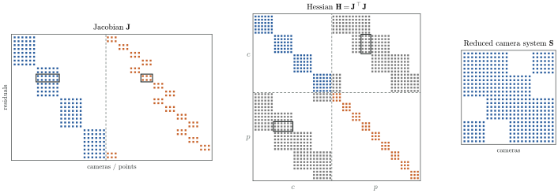

11. Bundle Adjustment and the Schur Complement
Status: outline
Schur complement

figures/py/ba_sparsity.py.Goals
After this chapter you will be able to:
- Build the BA problem and see the sparsity of its Hessian
- Marginalize landmarks with the Schur complement
- Fix the gauge freedom
In kornia-slam
crates/kornia-slam/src/mapping/bundle_adjustment.rskornia-3d BA